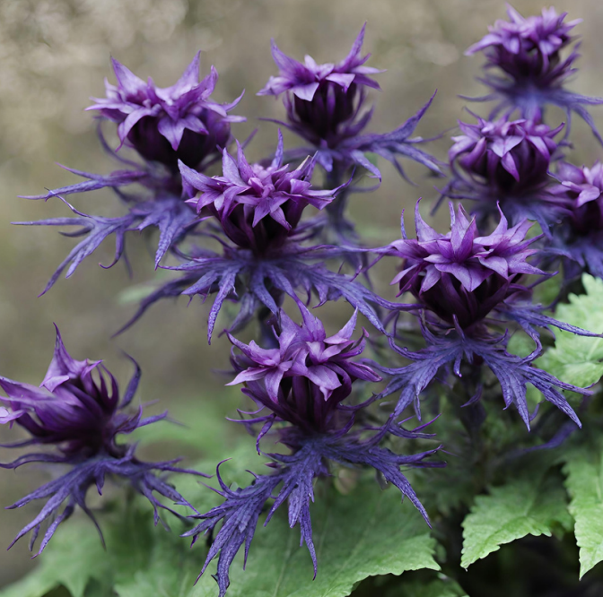

Description: The Grumroot Flower is a creeping plant species with thick, gnarled tendrils and deep purple foliage that seems to absorb light rather than reflect it. They bloom in shades of indigo and violet. They flourish in the dimly lit depths of Tozathadax's cavern systems, where they cling to rocky surfaces and creep along the damp, shadowy corridors. Grumroot Flowers have an incredibly slow growth rate and can survive for millennia, slowly spreading their tangled roots throughout the subterranean realms of the planet.
Planet: tozethadax